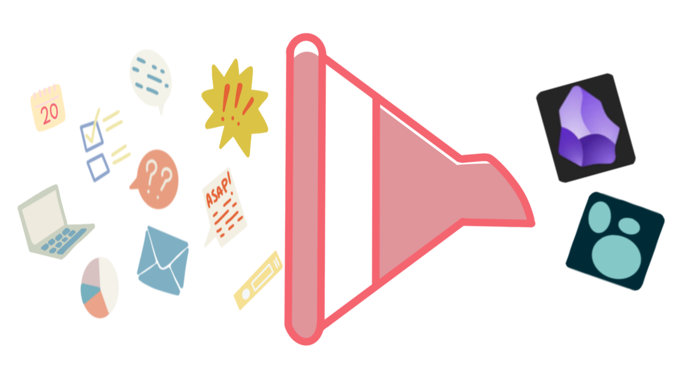

Five questions about PKM I get constantly
Early on, when I started running workshops on note-taking and personal knowledge management, I answered the questions I was asked.
A classic example of this is someone asking which app I use, and I’d say Logseq. I would describe the block structure and move on to the next hand. My answer was so on point that it never seemed to answer anything, and it took me an embarrassingly long time to notice the pattern.
Once I started teaching enough of these, the same handful of questions kept showing up, worded slightly differently each time, from different people in different rooms who’d come to me because somewhere along the way I’d become “the PKM person” in their circle. That repetition is the actual reason this post exists: the same small set of questions, over and over, exists in this post, coupled with more accurate answer then my first attempts at them.
What I eventually understood is that the literal question is almost never the one the person wants to ask (this is true for many other situations in life). The real question is usually hiding because the person can’t quite voice it yet, often because their experience with the whole topic is still too new to have the vocabulary for what they actually want to know. They ask about the tool because “tool” is a concrete and askable something that you can type into a search bar. What’s underneath it usually isn’t about the tool at all, and once I started answering the underneath version instead of the literal one, the same question stopped needing to be asked twice in different words by the same person over the course of an hour.
I want to be clear that I’m not describing a single exchange here with one particularly perceptive attendee. This is a pattern I only trust because I’ve seen it repeat itself across multiple situations.
Here are five of those, as I’ve come to hear them.

“Which app do you use?”
As spoilered, this is THE most common question I get asked before almost anything else, or at the end of everything else.
What’s actually being asked, most of the time, is whether this is even worth starting. The app is a ghost for a much more vulnerable question: if I pick a wrong Pokemon, does the whole adventure fall apart before it begins? Telling someone which app I use answers nothing about that. What actually helps is telling them that the tool matters far less than starting does, and that the tool they already have open right now is a perfectly good place to begin. Unlike the Pokemons, they can always change it later.
“How many notes do you have?”
For a while I gave them a number, or we started browsing my overwhelming amount of notes, which is the least useful thing I could have done.
Underneath it, there is a real anxiety about whether more notes means more knowing, or whether it just means more archiving. A pile of knowledge, loosely defined, looks like progress until it does not function like knowledge but like a storage unit. Nobody wants to be scarred to life by the amount of notes I have in my folders, and they definitely do not want to know how many of them are actually useful (even if it could be more helpful).
Whatever number I gave would have been the wrong kind of answer regardless of what it was, because the number was never the thing they needed. What they need, or want, is reassurance that volume isn’t the point, and that a small number of notes beats a large number when those are actually used and retrieved.
“Do you use AI to organize notes?”
This one’s gotten a lot more common recently. It’s clearly a workflow question, right? So to have a good answer I have to try some workflow myself. Rabbit hole ensues.
In the end it might be a question about where help ends and outsourcing the thinking begins. Does letting something else do the task costs tsomething in terms of cognitive work? That’s not a question with one right answer, and I try to treat it as the real, slightly uneasy question it is instead of a request for a tool recommendation. Someone who wants their tags generated automatically and someone who wants to sit with a messy note until the right tag occurs to them are not making the same trade, and I’ve stopped assuming one of them is doing it wrong.
“How do you find the time?”
Asked, almost always, with a specific kind of tired behind it.
Does note-taking costs time or saves it? A question as old as time (drama-queen is my second name). Most people asking this are measuring the cost of writing something down against a benefit they can’t see yet, because the benefit shows up later, when they don’t have to reconstruct something from memory that they already wrote down once. The honest answer involves admitting that Yes, it costs time up front, and that whether it pays that back depends on what you’re actually doing with the notes afterward. Nobody wants to hear “it depends” from someone they’ve just called an expert, and I say it anyway, because whatever.
“How do you stick with it?”
This is the one I’ve come to think is the most exciting. First because it assumes i stick with it consistently, which well… debatable. But also because the question might be about whether sticking with it is even the goal.
People ask this assuming that falling off a system is a personal failure: they did not master Yet Another Thing They Need To Master. They might expect to hear that they need to be better at it, that they need a better habit, or a stricter routine, or the jackpot: more willpower. What they actually need is to notice that the system they built doesn’t fit how they actually work, and that “failing” isn’t a discipline problem, it was due to fail. Two people can ask me this in the same afternoon and need opposite answers: one of them needs a lighter system, and the other needs to admit that sticking with anything was never really the goal they cared about in the first place.
What I’ve stopped trying to resolve
I don’t close these workshops, or this post, with a tidy answer that works for everyone, because it wouldn’t be honest. What works for me, (loving Logseq, or finding the more than occasional review sessions enjoyable), might not work for the person sitting across from me at all. Early on I think I wanted the five answers above to resolve into a single, exportable philosophy I could hand out at the end of a workshop. Nope, that never happened.
Every one of these five questions, despite the words being used, is asking: how do I run this on my own terms instead of running someone else’s version of it?